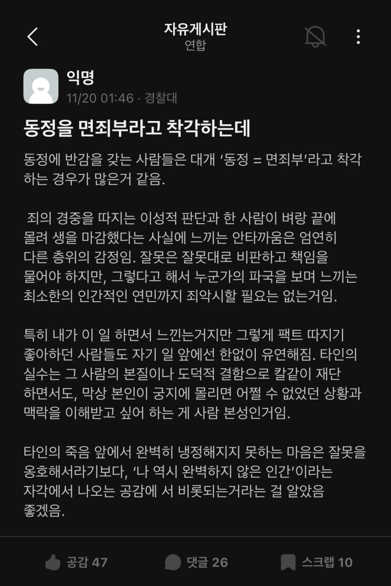
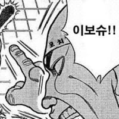

동정을 면죄부라고 착각하는데
댓글
동정이 아다 말하는줄
시발 갑자기 아다욕하네
아다도 면죄부를 주세요
자 여기 섹스면제부를 드리겠습니다

관용은 여유에서 나오니까 그만큼 살기 팍팍하단 소리겠지
처녀는 면죄부다
공감
여기서 동정하면 비추 맞는다
노 지큼 나 동청해?
나 한번만이라도 햄보카고시푼데! 왜! 나! 꽈찌쭈는 햄보칼수가업써!
아 그 동정.... 휴 난또
아다닷!.. 아 ! 다 ! 다 ! 닷!!!
리트냥이는 그래도 해보고싶은거 다해보고 죽었을텐데 왜 동정하는지 모르겠긴함 명성도얻어보고 돈도얻어보고 했을텐대
자기가 쌓은 탑이 무너지고 감방 가 보는 경험은 못 해봤잖아
다들 아마 "에휴... 왜 그르케 밖에 못 살았니..."의 감정일거임.
나같은 경우는 세무냥이는 그래도 의혹 터지고 주변 일가친척이나, 전 회사에서까지 걱정어린 연락을 받았다고 하는 거 보면 개인 인간관계는 그래도 꽤 잘 했나보네 생각했었거든.
잘못된 길로 가고 있을 때, 그래도 주변에서 좌시하지 않고 혼낼 건 혼내고 다독일 건 다독이면서 바른 길로 이끌어 줄 사람들이 있다는 건 되게 큰 자산이고 나름 본인의 인복이라고 봄.
근데 리트냥이는 최소한의 그런 주변인 조차도 없었던걸로 보임. 인터뷰 보면 부모님도 고대나 설치에 대해 의혹을 갖고 있었던 듯 한데, 그럼에도 불구하고 얘가 스노우볼을 이렇게 굴리고 결국 살자할 동안 주변인들의 그 어떤 개입도 없었으니 좀 에휴...싶은거지. 주변인들이 잡아주면 죽지는 않거든.
리트냥이가 의대생 스토킹할 때 했던 욕이 "너 집 밖으로 나가긴 하냐? 엄마 아빠랑 같이 살고 있긴 해?" 였거든. 여태 지 컴플렉스를 투영해 욕했던 걸 생각하면, 리트냥이는 집밖에도 잘 안 나가고, 어울릴 친구는 커녕 가족과도 사이가 그닥이었을거로 추정됨.
물론 다 지가 만든 업보긴 하니, "에휴.. 그르게 잘 좀 살지 그랬냐...."싶어서 동정이나 연민감들을 갖는거일거임.
동정이란게 꼭 공감이나 우호가 아니라 한심하다에 가까운 기전에서도 나오는 감정임. 사람이 일생 거의 전반을 내내 잘못된 선택만 하다 죽었으니까 그런 갑갑한 감정 누구는 느낄수도 있겠지. 동정, 안타까움 이런 단어에 버튼 눌리는 사람들은 그 단어를 편들기, 우호라고 생각하는 것 같은데 에휴 ㅉㅉ 개한심. 대체 왜저렇게 살아... 이런 것도 동정심에 속하는 감정이야
아예 동기 자체가 일반인 정서로 이해조차 할수없는 (초딩 ㄱㄱ하고 때려죽이고 싶다 같은) 흉악범죄면 혐오감만 들어서 그조차 없겠지만 쟤 치팅범죄는 인정받고 싶고 잘나보이고 싶다는 동기니까 다들 그 동기 한번쯤 느껴도 정상적으로 다스리고 사는걸 쟨 대체 왜 못할까 싶은거지
매우 공감함
글쎄다
리트냥이 죽을만한 짓한거는 별개로
한국에서 경쟁이 센거야 자본주의고 자원 없으니까 인정하는데
경쟁에서 진사람을 국평오 지잡대 좋소 200충 이렇게 멸시하니까 선을 넘는 사람도 나오는거지

진짜 동정도 별로 없고 쟤를 소재로 소설, 수필, 영화 각본 쓰면서 노는 거더만ㅋㅋ
근데 좀 레전드긴해서 동정심이 안들던데
길가다가 풍뎅이 밟아죽이면 미안한데 길가다가 바퀴벌레 밟아죽이면 아 씨발 하는 느낌이랑 살짝 비슷함
우와 감정 없는 사이코당
뭐지 살짝 억울함
100% 억울한건 아닌데 약간 푸바오 떠날 때 눈물 흘린 언냐들한테 감정없는 사이코라고 매도 당한 것과 같은 수준의 억울함
남의 죽음으로 불쾌함 느끼기 쉽지 않은데 이번 건은 기분만 드러움
나도 엥간해선 누구 죽으면 안타까움을 느끼는편인데
이번엔 진짜 죽음을 도주경로로 사용한 느낌이라서 동정심도 안드는것같음
나는 머리속에서 자동으로 서사가 만들어지다가도 버스딸에서 뇌정지옴
ㄹㅇ 버스딸에서 착즙기 잼걸림
결과론이지만 리트 안보고 계속 살아 있었으면 또 사기치고 다녔을거 같아서 동정은 안감 여러번 범죄를 저지른 사람인데 마인드가 일반적인 마인드일까
어지간한 경우에는 동정심을 표하는 입장인데,
이번에는 그럴 생각이 전혀 안들어.
과거 범죄 이력을 보면 자기파괴적 성향이 있는 반사회적 인물임. 그리고 치팅으로 자격을 얻고도 거기에 적응하고 활용할 능력도 없는데, 의대생에게 인증을 유도하며 욕설한 사건을 보면 자기가 원하는 걸 얻기 위해 타인을 상처입히는 행위에 거리낌이 없어. 유서에 반성도 없다는 이야기는 덤이지.
그냥 이미 망가진 인간이 처음부터 끝까지 자업자득으로 깽판쳐버린거임.
다른 사람들이 동정하는 건 상관없는데, 굳이 마음아파할 가치는 없는 사건 같아서 하는 소리임. 그런 좋은 마음과 관심을 그럴 가치가 있는 존재에게로 돌리면 더 좋은 일이 될테니까.
죽음이란게 언제가 모두에게 찾아올 최후이기 때문에 쉬운감정의 공감을 얻기 쉬울 뿐이지
한짓만 놓고보면 전혀 ,,,
왜 섹스를 안해본게
면죄가 되는건지 고민했는데
이게맞죠..
전혀 별개의 얘기인데.. ㅋㅋ
옹호로 생각하는애들 많은게 좀 그래
빨리 아다 떼야겠다